CVPR Demo: Quantum-Enhanced Cotton Defoliation Analytics
The video begins with full pre- and post-defoliation UAV frames, then visualizes cotton-only response maps and refined detection overlays before moving to the ten quantitative comparison plots used in the analysis.
Pre-Defoliation UAV Image
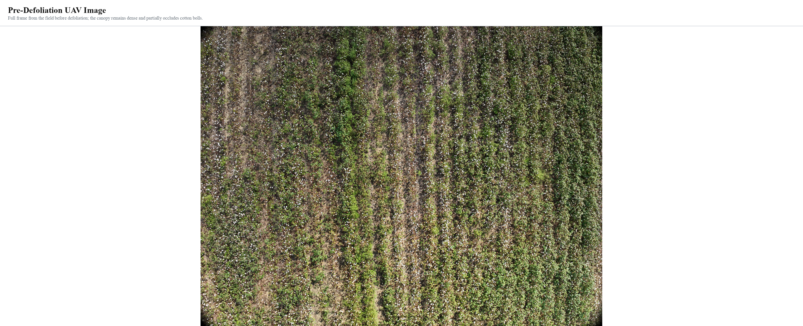
Full pre-defoliation frame from the ICML UAV dataset. The green canopy is intact, and cotton bolls remain partially occluded by leaves and dense vegetation.
Pre-Defoliation Cotton Response Map
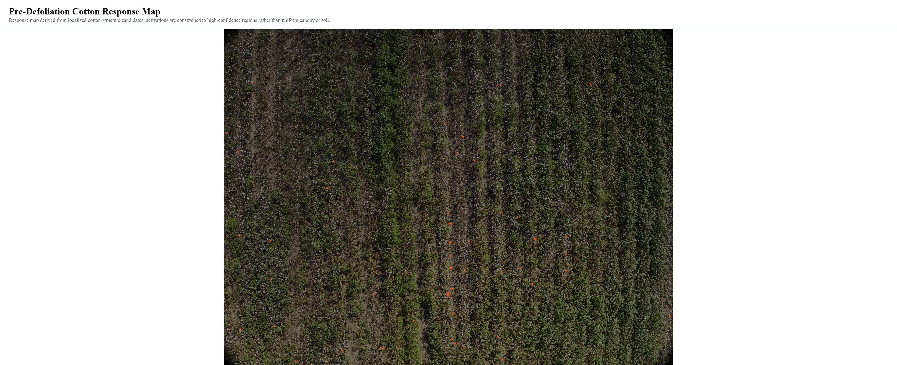
Cotton-only response map generated from cotton-boll candidate detections. The full image is preserved, and highlighted regions are restricted to detected cotton structures rather than the entire field.
Post-Defoliation UAV Image
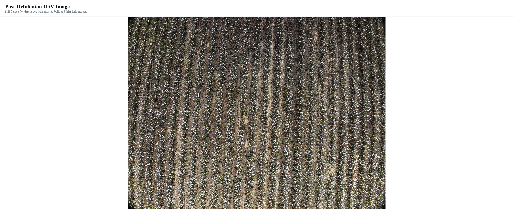
Full post-defoliation frame from the ICML UAV dataset. After defoliation, exposed cotton bolls and row structure become substantially more visible across the field.
Post-Defoliation Cotton Response Map
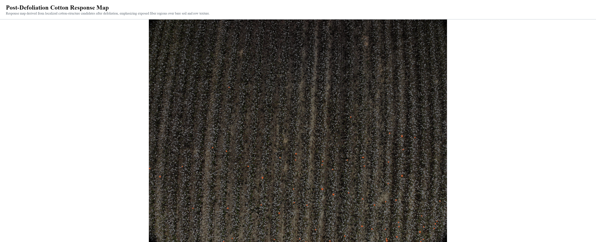
Cotton-only response map generated from cotton-boll candidate detections. Highlighted regions correspond to detected cotton structures and reveal the denser exposed cotton distribution after defoliation.
Pre-defoliation scene analysis
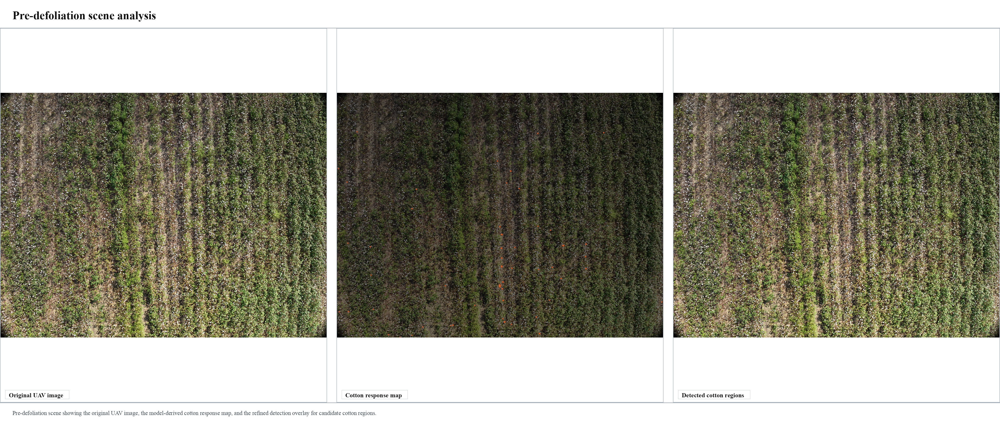
Pre-defoliation scene showing the original UAV image, the model-derived cotton response map, and the refined detection overlay for candidate cotton regions.
Post-defoliation scene analysis
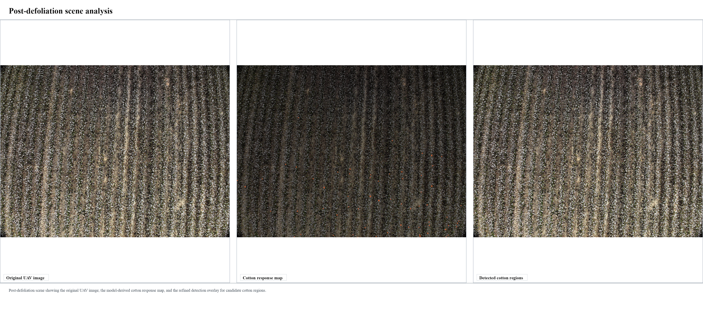
Post-defoliation scene showing the original UAV image, the model-derived cotton response map, and the refined detection overlay for candidate cotton regions.
Cross-Validation Bars
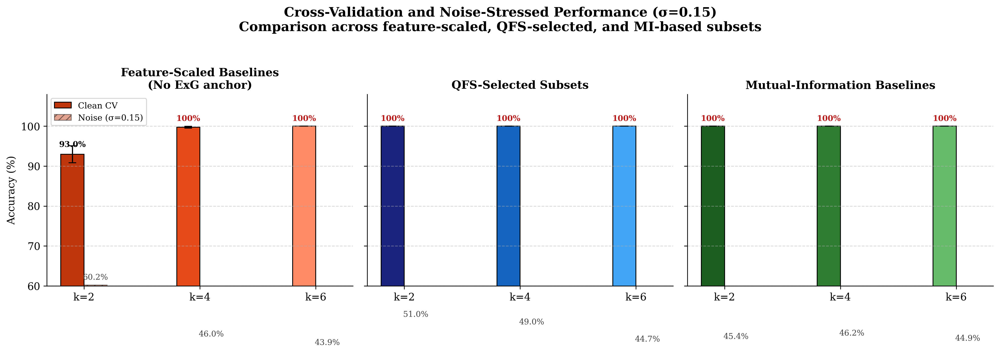
Cross-validation accuracy and noise-stressed accuracy across the compared feature families at k=2, 4, and 6. The slide summarizes baseline behavior before the remaining stress tests.
Noise Robustness Curve
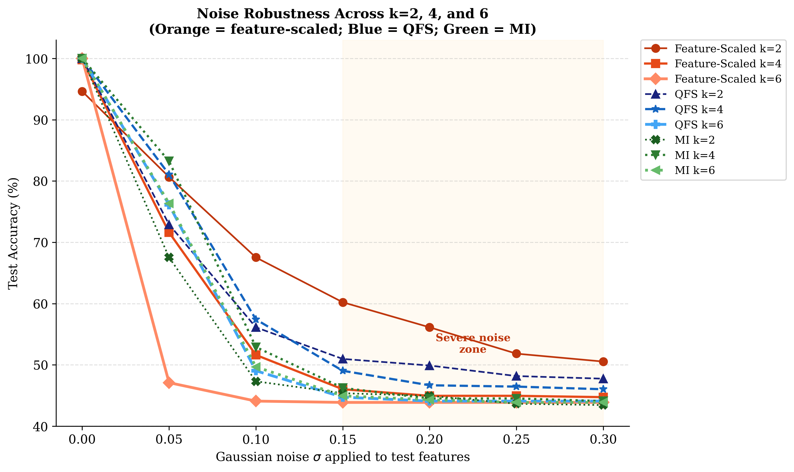
Accuracy under progressively stronger Gaussian noise. This figure is useful for the demo because it emphasizes robustness rather than clean-data performance alone.
Augmentation Robustness Matrix
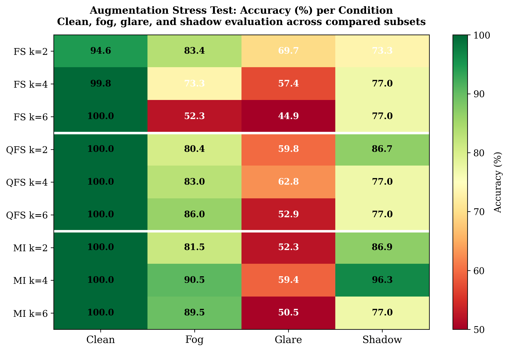
Performance under clean, fog, glare, and shadow conditions. The matrix compactly summarizes how each feature family behaves under major field perturbations.
ROC and Precision-Recall Curves
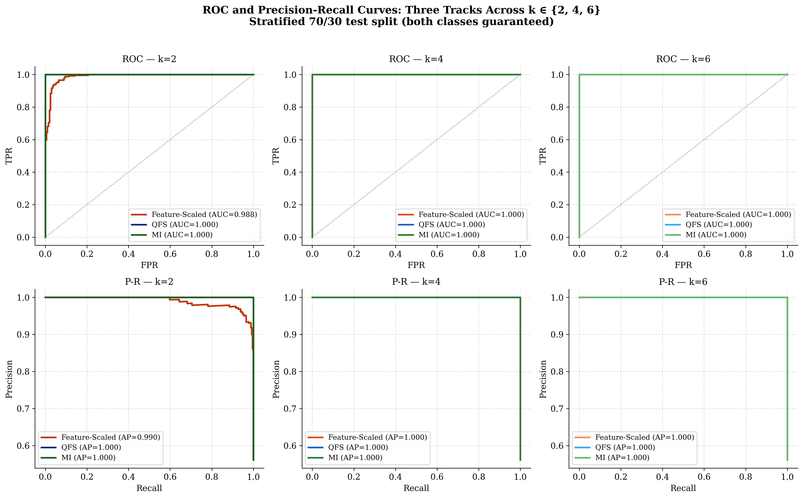
ROC and precision-recall curves provide threshold-free comparisons across the k-based subsets and show how ranking quality varies between the candidate feature families.
Feature Membership Map
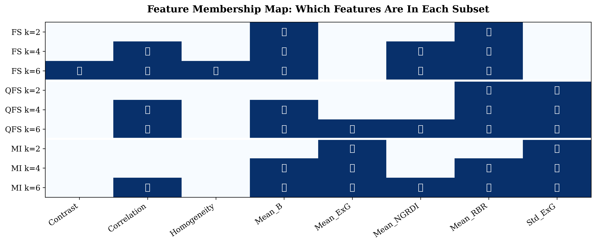
Binary feature-membership map for the compared subsets. This makes the selected descriptors transparent without interrupting the video with long tables.
Summary Table
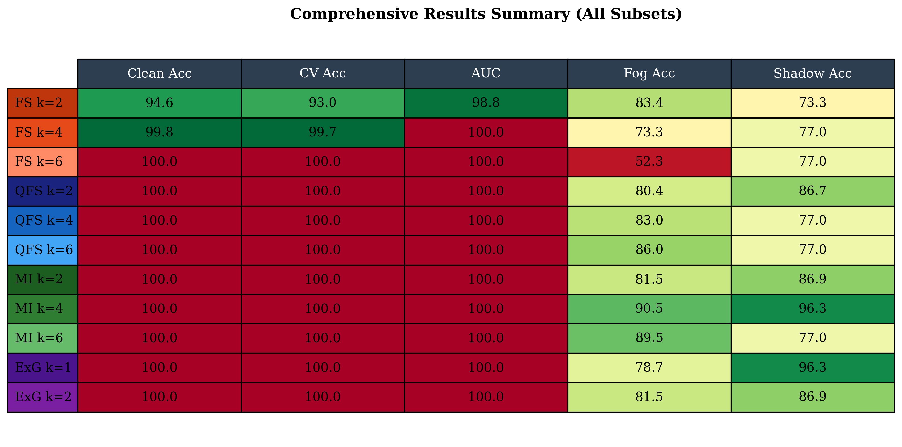
Compact summary of the key results used in the k-comparison study. This slide acts as a bridge from the main comparison plots to the reproduced figures that follow.
Cross-Validation Stability
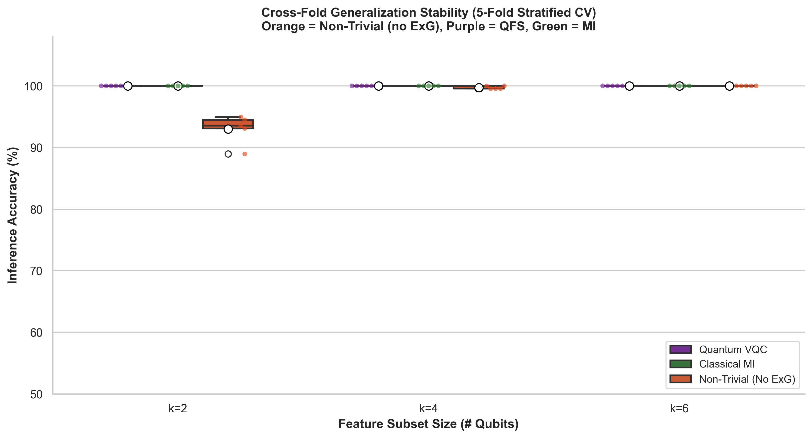
Cross-validation stability across folds. The boxplot complements the bar chart by exposing variance rather than only central tendency.
Qubit Scaling Comparison
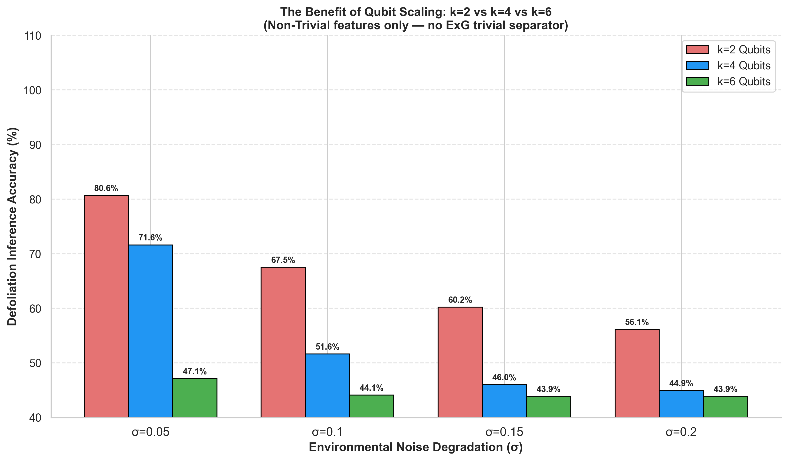
Performance trend as the selected subset size increases from k=2 to k=6. This plot connects the feature-selection story to the quantum subset size directly.
PCA Manifold View
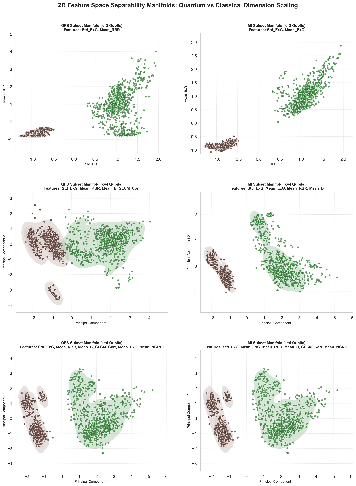
Low-dimensional manifold view of the selected feature representations. It helps visualize the separation structure learned by the compared subsets.
Multi-Metric Radar Summary
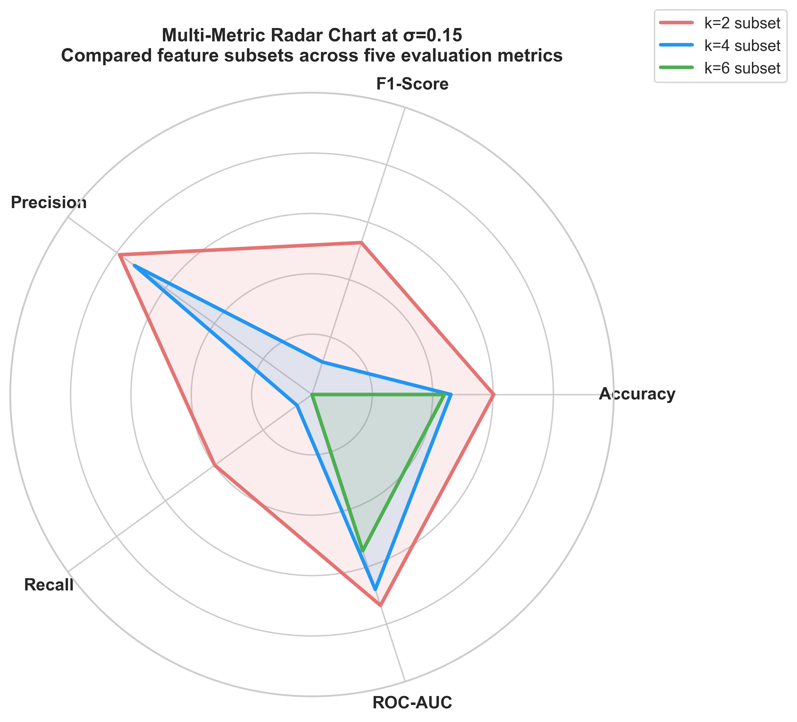
Multi-metric summary at sigma = 0.15 using accuracy, F1-score, precision, recall, and ROC-AUC. The labels were rewritten for the demo to keep the presentation neutral and academically consistent.